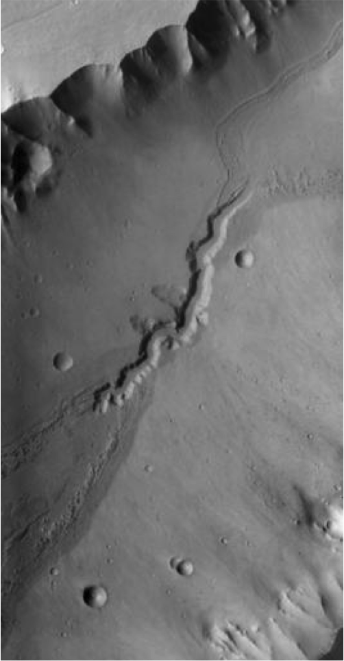
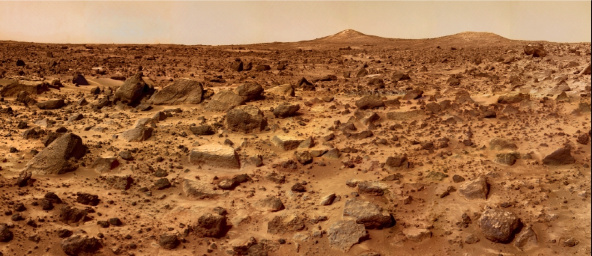

Croisière interplanétaire (Partie I)
CEA Explorer et comprendre l'Univers
28 octobre 2014
Deux types de planètes
- Planètes telluriques
- Similaires à la Terre
- Mercure, Vénus, Terre, Mars
- Planètes joviennes
- Similaires à Jupiter
- Jupiter, Saturne, Uranus, Neptune
Système solaire
- Planètes
- Corps sphérique
- En orbite autour du Soleil
- Qui a éliminé les autres corps de son entourage
- Astéroïde
- Petit corps (pas nécessairement sphérique)
- En orbite autour du Soleil
- Satellites
- Corps en orbite autour d'une planète ou d'un astéroïde
Système solaire
- Ceinture d'astéroïdes
- Entre Mars et Jupiter
- Grand nombre d'astéroïdes
- Ceinture de Kuiper
- Au-delà de Pluton (jusqu'à 120 UA)
- Grand nombre d'astéroïde
- Nuage de Oort

@DoTryThisAtHome
Distribution de la masse
| Soleil |
99,80 |
| Planètes principales |
0,14 |
| Nuage de Oort |
0,05 |
| Ceinture de Kuiper |
0,001 |
| Astéroïdes, satellites, anneaux |
< 0,0001 |
Distribution de la masse
| Mercure |
0,01 |
| Vénus |
0,18 |
| Terre |
0,22 |
| Mars |
0,02 |
| Jupiter |
71,14 |
| Saturne |
21,30 |
| Uranus |
3,26 |
| Neptune |
3,86 |
| Pluton |
0,00 |
Température des planètes

Les planètes telluriques

Mercure

Mercure
| Distance au Soleil |
0,387 UA |
| Excentricité |
0,206 |
| Période de révolution |
88 jours |
| Période de rotation |
59 jours |
| Diamètre |
4878 km |
| Masse |
3,31\(\times\) 1023 kg |
| Champ gravitationnel |
3,72 N/kg |
| Densité |
5,44 |
| Albédo |
0,10 |
| Température |
430°C, -100°C, 167°C |
Mercure
- Planète la plus rapprochée du Soleil
- Vitesse orbitale moyenne la plus élevée : 48km/s
- Survolée par Mariner 10 et 1974 et 1975
- Messenger en orbite
Messenger

NASA/Johns Hopkins University Applied Physics Laboratory/Carnegie Institution of Washington
Messenger

NASA/Johns Hopkins University Applied Physics Laboratory/Carnegie Institution of Washington
Vénus

ESA/MPS/DLR/IDA
Vénus
| Distance au Soleil |
0,723 UA |
| Excentricité |
0,007 |
| Période de révolution |
224,7 jours |
| Période de rotation |
243,01 jours |
| Diamètre |
12 104 km |
| Masse |
4,87\(\times\) 1024 kg |
| Champ gravitationnel |
8,85 N/kg |
| Densité |
5,24 |
| Albédo |
0,65 |
| Température |
477°C |
Vénus
- Astre le plus brillant dans le ciel après le Soleil et la Lune
- Nuages empêchent de voir sa surface
- Constitution interne très semblable à la Terre
Vénus
- Atmosphère
- Nuages d'acide sulfurique
- Effet de serre
Venera-13

Venera-13

Magellan

Vénus
- Semble avoir une activité tectonique
- Monts Maxwell
- Rotation rétrograde très lente
Vénus
- Présente toujours le même hémisphère vers la Terre
- Résonance gravitationnelle?
Transit de Vénus
NASA/SDO, AIA
Mars

Mars
| Distance au Soleil |
1,524 UA |
| Excentricité |
0,093 |
| Période de révolution |
1,88 année |
| Période de rotation |
24h 37min 23s |
| Diamètre |
6794 km |
| Masse |
6,42\(\times\) 1023 kg |
| Champ gravitationnel |
3,72 N/kg |
| Densité |
3,94 |
| Albédo |
0,16 |
| Température |
20°C, -140°C, -40°C |
Mission d'exploration de Mars
Mars Odyssey
Composition du sol (2001)

Spirit
Preuve qu'il y a eu de l'eau sur Mars (2004)

NASA/JPL-Caltech/Cornell Univ./Arizona State Univ.
Spirit
- Coincé dans le sable depuis 2009
- Fin de la mission en 2011
Opportunity
Preuve qu'il y a eu de l'eau sur Mars (2004)

NASA/JPL-Caltech/Cornell Univ./Arizona State Univ.
Mars Reconnaissance Orbiter
Images détaillées de la surface (2006)

NASA/JPL-Caltech/Univ. of Arizona
Pheonix
Étude du climat et de la présence d'eau (2008)

NASA/JPL-Caltech/University Arizona/Texas A&M University
Curiosity

NASA/JPL-Caltech/Malin Space Science Systems
Curiosity
À la recherche de molécules organiques (2012)

NASA/JPL-Caltech/MSSS
MAVEN
Pourquoi Mars a perdu son atmosphère (2014)

NASA/Kim Shiflett
MOM

Mars
- Atmosphère ténue (0,01 bar)
- Composée principalement de CO2 (95%)
- Glace sèche (CO2) et eau glacée
- Couleur orangée : rouille (oxyde de fer)
- Orbite incliné de 25°
Mars
- Composition semblable à la Terre
- Croûte
- Hautes terres criblées de cratères
- Plaines volcaniques plus récentes
- Manteau
- Noyau métallique
Mars
- Pas d'activité tectonique
- Pas de chaînes de montagne
- Points chauds crachent toujours leur lave au même endroit
- Volcans gigantesques
Mont Olympus
- Plus haut volcan du système solaire
- Hauteur de 23 km (3 fois l'Éverest)
- Large de 600 km
Mont Olympus

NASA/JPL
Présence d'eau sur Mars

Présence d'eau sur Mars
Causé par un écoulement d'eau liquide ou solide
Sol martien

Robot Pathfinder || NASA/JPL/Caltech
Satellites de Mars

MRO || NASA/JPL-Caltech/University of Arizona
Satellites de Mars

MRO || NASA/JPL-Caltech/University of Arizona
Comète 67P/Churyumov-Gerasimenko

ESA/Rosetta/MPS for OSIRIS Team MPS/UPD/LAM/IAA/SSO/INTA/UPM/DASP/IDA